Page 1 / 原始页码 903
第 47 章 棘皮动物
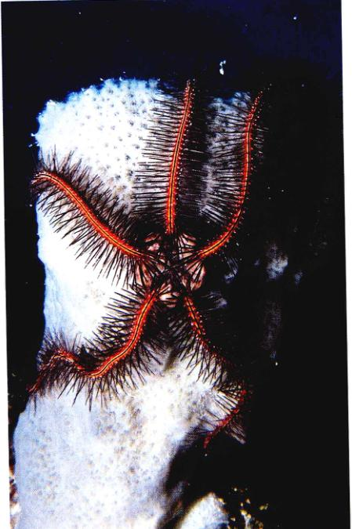
图 47.1 棘皮动物 海蛇尾 (Ophiothrix) 是棘皮动物最大家族中的一员。
棘皮动物，包括所有的海星，被形容为“上帝专门设计用来迷惑动物学家的高贵一族”。幼虫是两侧对称的，却经历一种奇异的变态过程而成为辐射对称的成体（图 47.1）。体腔的一部分转变为独特的水管系统，利用液体压力来操纵众多的微小管足，用以进行移动和捕食。有一些棘皮动物的皮肤下具有像“盔甲”一样的内骨骼骨板。许多棘皮动物的体表遍布着爪状的微型钳子，经常位于柄上，有时还具有毒腺。这些特征在动物界中都是独一无二的。
Page 2 / 原始页码 904
47.1 后口动物的胚胎发育方式完全不同于原口动物
47.1.1 原口动物和后口动物
迄今为止，我们见过的真体腔动物——软体动物、环节动物和节肢动物，都开始于一个细胞形成的空心球，也就是囊胚，然后这个囊胚凹陷形成了双层的球，朝外的口叫做胚孔。也是在这一类动物中，口的发育是从胚孔附近开始的（图 47.2）。从通常意义来看，这个共同的发育模式存在于所有的无体腔动物中。口以这种形式发育的动物称为原口动物 (protostome)。如果这样的动物有一个独立的肛门，它会随后在胚胎的另一端发育形成。这种发育方式在各个门中都很常见，说明了它是所有动物中最早原始的发育方式，而且具有真正的后生动物共同祖先的特征。
在棘皮动物、脊索动物以及其他少数相关的小门中，还存在着另一类独特的胚胎发育模式。这种发育模式的一致性，以及它与其他原口动物的差异性说明了所有具有这一特征的门是由共同的祖先进化而来的。在后口动物 (deuterostome) 的发育过程中，胚孔发育成生物体的肛门，而口则随后由囊胚上产生的第二个孔发育而来。
后口动物的胚胎发育显示了动物进化的过程。除了胚孔形成方式之外，后口动物在一系列其他的基本胚胎特征上也与原口动物不同：
(1) 在胚的生长过程中，细胞的持续分裂称为卵裂 (cleavage)。卵裂的方式与胚轴密切相关，这决定了细胞的排列。在几乎所有的原口动物中，每一个新形成的细胞都与胚轴形成一定的微小角度。结果，新细胞填充在旧细胞的空隙中，紧密排列在一起。由于分裂形式的一系列细胞从极轴螺旋向外排列，所以，这种卵裂方式称为螺旋形卵裂 (spiral cleavage)（图 47.2）。
在后口动物中，细胞相互平行分裂，并与胚轴成直角。结果，每次分裂形成的成对细胞直接互相叠置，这种方式产生的细胞排列疏松。这种方式叫做辐射状卵裂 (radial cleavage)，因为一系列分裂形成的细胞显示出从胚轴向外辐射的线条。
(2) 原口动物呈确定性 (determinate) 发育。在这种发育模式当中，每个胚胎细胞都有着预先设定好的命运，发育为成体中特定的组织。在分裂开始之前，作为发育信号的化学物质分布在卵的不同部位。于是，随着受精卵的分裂，不同的信号分配给不同的子细胞。这种过程确定了甚至是刚形成的胚胎细胞的命运。后口动物相对而言，呈现出不确定性 (indeterminate) 发育。
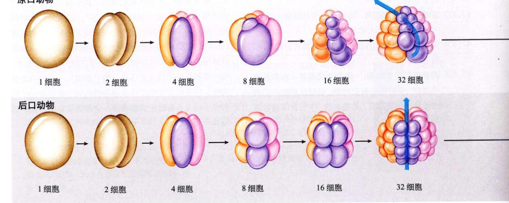
图 47.2 原口动物和后口动物的胚胎发育 卵裂形成了一个空心的细胞球，叫做囊胚。囊胚的内陷产生了胚孔和原肠腔。在原口动物中，胚胎细胞呈螺旋状分裂并紧密堆叠。胚孔发育成了动物的口，而体腔形成于中胚层的开裂。
Page 3 / 原始页码 905
受精卵最初的几次细胞分裂产生出完全相同的子细胞。其中任何一个子细胞，如果从其他的细胞分离出来，都能够发育形成一个完整的个体。这可能是因为促使胚胎细胞分化发育的化学物质直到动物胚胎发育的晚期才开始分布而造成的。
(3) 在所有的体腔动物中，体腔都由中胚层发育而来。原口动物体腔的形成方式很简单，随着中胚层内体腔的膨大，细胞就彼此分开了。但是，在后口动物中，通常一组细胞都会移动，形成新的组织结构。体腔通常是由原肠腔 (archenteron) 的外翻形成的，原肠腔是原肠胚的一条中央管，也叫做原始消化管。这个与内胚层并行的管道，通过胚孔与外界相通，并最终成为消化腔。
现存最完好、最丰富的动物化石有6亿年的历史，它们分布于澳洲的埃迪卡拉 (Ediacara) 动物群和其他类似的地方。在这些化石当中，许多动物的代表类群已不复存在。而且，这些古老的石头提供的证据表明，体腔动物是最先进的动物进化支，尤其值得注意的是，两类最主要的动物分支很早就分道扬镳了。在体腔动物中，几乎所有的后口动物都有共同的原口动物祖先，这一理论已被 rRNA 比较和其他分子生物学证据所证实。但是，这一过程发生在很久以前，可能与现存的任何生物类群毫无相似之处。
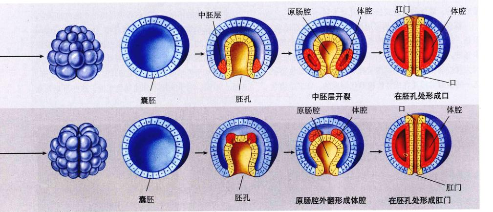
图 47.2 原口动物和后口动物的胚胎发育（续） 在后口动物中，胚胎细胞辐射状分裂并形成疏松的排列方式。胚孔发育为动物的肛门，口在另一端发育。体腔从后口动物的原肠腔外翻形成。
Page 4 / 原始页码 906
47.2 棘皮动物是具有内骨骼的后口动物
47.2.1 后口动物
软体动物、环节动物和节肢动物是原口动物。但是，棘皮动物却因后口式发育而不同，这是一个重要的进步。内骨骼也是在棘皮动物中最早出现的。
棘皮动物
后口式海洋动物棘皮动物 (echinoderm)，出现于大约6亿年前。棘皮动物是一类非常古老的海洋生物，大约包含6000种现存的种类，化石记录也很丰富（图 47.3）。棘皮动物的名字源于“多刺”的皮肤，也指紧贴精细皮肤下的由坚硬的、富含钙的骨板组成的内骨骼 (endoskeleton)（图 47.4）。最初形成的时候，这些骨板处于活组织之内，是名副其实的内骨骼，而发育为成体时，骨板相互愈合形成了一个硬壳。棘皮动物的另一个进步是发展出了一套辅助运动或捕食的水管系统 (water vascular system)。这种充满了液体的系统由一个中央的环水管和由此伸向身体和腕的五个辐水管组成。
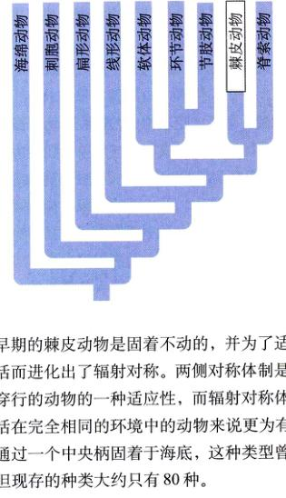
在海边的许多最常见动物中，海星、海蛇尾、海胆和海参都是棘皮动物。它们的成体都是辐射对称的。虽然其他一些动物也有辐射对称的，但不具备成熟棘皮动物那样复杂的器官系统。棘皮动物不仅在浅海中很常见，在深不见底的地方也很多。在大洋沟 (oceanic trench) 中，也就是海洋中最深的地方，海参占据了那里生物数量的 90%！除了少数游动的海参，它们几乎全部都是底栖的。成体的直径或长度从几毫米到一米多。
棘皮动物有着极好的可追溯到寒武纪的化石记录。但是，纵使有这样丰富的自身信息，棘皮动物的起源仍然是未知数。人们认为它们可能从两侧对称的祖先进化而来，因为棘皮动物的幼体是两侧对称的。作为棘皮动物特征之一的辐射对称是在成体阶段演化形成的。许多生物学家相信早期的棘皮动物是固着不动的，并为了适应这种固着生活而进化出了辐射对称。两侧对称体制是那些在环境中穿行的动物的一种适应性，而辐射对称体制对于那些生活在完全相同的环境中的动物来说更为有利。棘皮动物通过一个中央柄固着于海底，这种类型曾经过遍存在，但现存的种类大约只有 80 种。
47.2.2 棘皮动物的体制
棘皮动物的体制在发育过程中经历一个根本的演变。所有的棘皮动物都是次生性辐射对称 (secondary radial symmetry) 的，也就是说，其幼虫是两侧对称的，成虫却演变成辐射对称。由于它们辐射对称的身体，因此无法使用通常用来形容动物身体的那些名词：背部、腹部、前面、后面。对于头尾不分的动物来说，这些是毫无意义的。相反，棘皮动物的身体结构是参照位于口面上的口进行讨论的。大多数的棘皮动物利用口面来爬行，虽然海参和其他一些棘皮动物的体轴是水平的，它们依然利用身体前端的口面部分来爬行。
棘皮动物有着五辐射对称的身体体制，像海星的五条腕或沙币的“壳”。这些动物没有头或大脑。它们的神经系统由一个发出分支的中央神经环 (nerve ring) 组成。这些动物能够产生复杂的应激反应，但是没有中枢的作用。
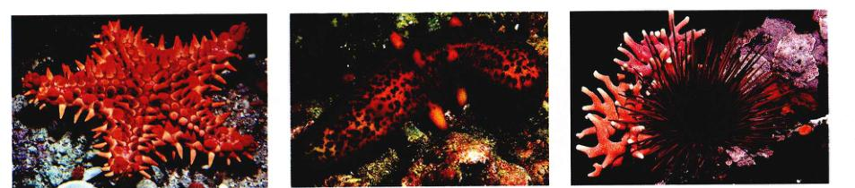
图 47.3 棘皮动物的多样性 (a) 海星 (Oreaster occidentalis, 海星纲) 分布于墨西哥加利福尼亚湾。(b) 拟刺参 (Parastichopus parvimensis, 海参纲) 分布于菲律宾。(c) 海胆 (海胆纲)。
Page 5 / 原始页码 907
棘皮动物门：后口式发育和内骨骼
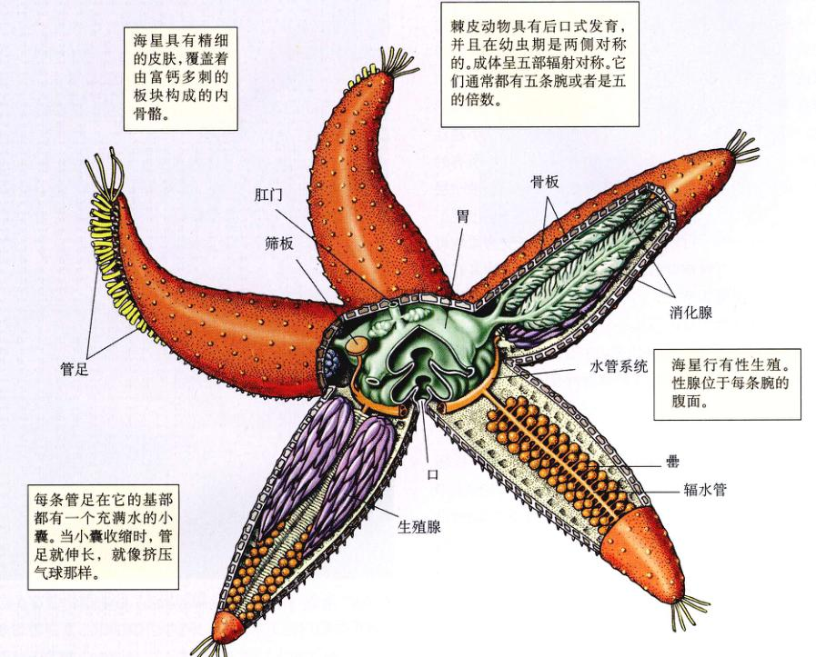
图 47.4 后口式发育和内骨骼的进化 棘皮动物，如海星（棘皮动物门），是后口式发育的体腔动物。精细的皮肤覆盖着由富含钙的板块构成的内骨骼，这些板块通常愈合成连续的坚硬而多刺的一层。
- 海星具有精细的皮肤，覆盖着由富钙多刺的板块构成的内骨骼。
- 棘皮动物具有后口式发育，并且在幼虫期是两侧对称的。成体呈五部辐射对称。它们通常有五条腕或者是五的倍数。
- 每条管足在它的基部都有一个充满水的小囊。当小囊收缩时，管足就伸长，就像挤压气球那样。
- 海星利用水管系统移动。每条腕的腹面可伸出上百条管足。当足底部的吸盘接触到海底时，海星的肌肉可以收紧，把自己拖动。
- 当受到攻击的时候，海星总是断掉自己的腕，并很快长出新的腕来。更为神奇的是，一条断腕有时候能够再生出一个完整的海星来。
Page 6 / 原始页码 908
1) 内骨骼
棘皮动物的皮肤很精细，含有上千个感觉神经细胞，覆盖在内骨骼之上。内骨骼由可移动或固定的富含钙的小骨片 (ossicle) 构成。这些动物或多或少是可以连续生长的，但是它们的生长会随成年而减缓。在板块最初形成的时候，它们被包在活组织里。在一些棘皮动物中，如海盘车或海参，小骨片广泛分散，且体壁是柔软可变形的。另一些，特别是海胆类，小骨片愈合形成一个刚性的壳。在很多情况下，这些骨板上有棘刺。几乎所有的棘皮动物的整个内骨骼，甚至连海胆的长刺，都被一层皮肤所包裹。这一门动物的另外一个重要特征是出现了易变的胶原组织，可以从坚硬有弹性的组织变为柔软可流动的组织。这种神奇的身体某部分的多棘皮动物具有某些独特特征的原因所在，比如快速自切身体某部分的能力。有些棘皮动物骨板上有小孔，管足 (tube feet) 即从这些孔中伸出来。这些管足是水管系统的一部分，而水管系统是棘皮动物所特有的。
2) 水管系统
棘皮动物的水管系统 (water vascular system) 以环绕食道的环水管 (ring canal) 为中心，呈辐射状排列。5条辐水管 (radial canals) 的位置在胚胎发育的早期就已经确定，随后延伸进入身体的5个部分并决定了其基本对称方式（图 47.5）。水流通过棘皮动物特有的筛板 (madreporite) 进入系统，再经过石管 (stone canal) 流进环水管。之所以叫做石管是因为它周围环绕着碳酸钙。5条辐水管通过短的侧水管分支延伸进空心的管足（图 47.6）。在某些棘皮动物中，每个管足的末端都有一个吸盘；另一些棘皮动物就没有吸盘。每个管足的基部是一个肌肉质的囊状壶 (ampulla)，里面充满液体。当囊状壶收缩时，液体受到单向瓣膜的阻止不能进入辐水管，而被压入管足，管足便伸长，并附着在其他物体上。管足壁内的纵肌随之收缩使管足弯曲。囊状壶舒张时，液体流回囊状壶内引起管足移动。借助大量弱小的管足的协调运动，棘皮动物可以在海底“漫步”。
海参（见图 47.3b）体表通常有五列管足用于运动。在口腔附近还具有特化的、用于摄食的管足。海百合的腕由口朝上的杯状物的边缘伸展开来，腕的分支又伸出管足。有了这些管足，动物就可以从周围的水中获取食物。
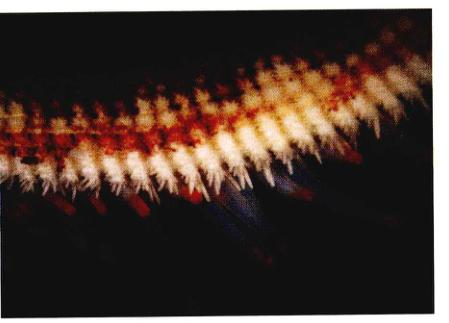
图 47.6 管足 砂海星 (Ludia magnifica) 伸展的管足，管足末端没有吸盘。

图 47.5 棘皮动物的水管系统 辐水管使水能够流入管足内。当每个管足的囊状壶收缩的时候，管足伸长并附着于海底。随后，管足的肌肉收缩使管足弯曲，并将动物拉向前力。
Page 7 / 原始页码 909
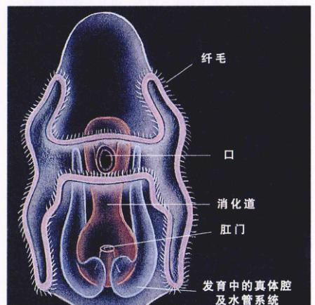
图 47.7 棘皮动物自由生活的幼虫 图中显示了幼虫以纤毛带运动的纤毛带。由于幼虫是两侧对称，意味着棘皮动物的祖先与现在的种类不同，它不是辐射对称的。
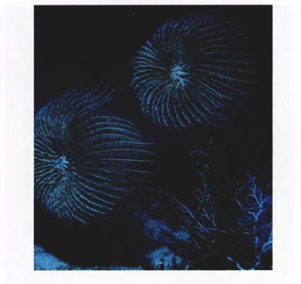
图 47.8 海百合 (Cenocrinus asterius) 这两种海百合显示出典型的抛物线型的腕组成的“猎食网”。水流从右流向左，把微生物带进细长的海百合腕中。猎物被捕捉提取后，顺着腕流进了中间的口中。这张照片是在巴哈马群岛海域大约 400 m 深处拍摄的。
而海蛇尾（见图 47.1）的管足是尖的，专门用来摄食。
3) 体腔
在棘皮动物中，占比例较大的体腔与一个复杂的管系统相联系，协助循环和呼吸。许多棘皮动物通过小巧、指状的皮鳃 (papulae)（见图 47.5）将呼吸的废物排出体外。皮鳃的内腔与体腔相连通，它们被一薄层皮肤覆盖，穿过体壁向外突出，起到鳃的作用。
4) 繁殖
许多棘皮动物能够再生失去的部分，而且有些种类，特别是海星和海蛇尾，在受到攻击时能够失去身体的多个部分。一些棘皮动物通过分裂能够进行无性生殖，海星的残片有时候能够再生出完整的海星来。有一些较小的海蛇尾，特别是热带的种类，能定期地通过将身体分裂成均匀的两部分来进行繁殖，每一半随后都能够再生出完整的动物。
虽然许多棘皮动物都具有分裂成小部分并由此再生出新的个体的本领，但这门的一大半种类繁殖还是通过外部的有性繁殖来完成的。大多数棘皮动物是雌雄异体，虽然外表上看不出什么区别。棘皮动物的受精卵通常发育成为自由游动的、两侧对称的幼体（图 47.7），但与软体动物和环节动物的担轮幼虫不同。这些幼虫组成了浮游生物的一部分，直到它们经过一系列的变态，成为固着生活的成体。
47.3 棘皮动物六个纲的成体都呈辐射对称
棘皮动物总共有 20 个已经绝迹的纲和 6 个现存的纲：①海百合纲，常见种有海百合和羽状海星；②海星纲，常见种为海星；③海蛇尾纲，常见种为海蛇尾；④海胆纲，常见种为海胆；⑤海参纲，常见种为海参；⑥海菊花纲，常见种为海菊花。海菊花是最近发现的，生长在深海中淹没的木质上。
47.3.1 海百合纲：海百合和羽状海星
海百合和羽状海星属海百合纲 (Crinoidea)。与其他现存的棘皮动物不同，它们的口和肛门位于身体上方的一个敞开的圆盘中。口和肛门通过一段简单的消化道相连。这些动物有简单的排泄和生殖系统以及庞大的水管系统。腕是海百合的捕食工具，位于圆盘的周围。不同种类的海百合从身体向上伸出 5~200 条腕不等，从腕上又伸出一种叫微羽枝 (pinnule) 的结构。在所有的海百合中，最初腕的数目并不多。具有 10 条以上腕的种类在成长的过程中不断增加新的腕。海百合是滤食动物，借助管足上的黏液捕食微生物，这种黏液在羽枝上非常丰富。
Page 8 / 原始页码 910
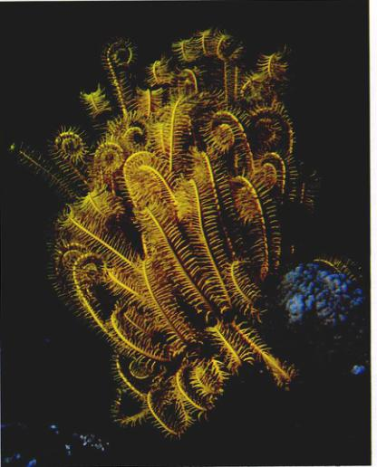
图 47.9 羽状海星 生活在澳大利亚大堡礁的羽状海星。
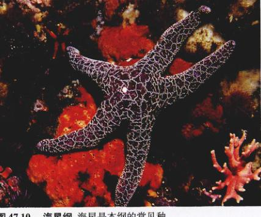
图 47.10 海星纲 海星是本纲的常见种。
研究棘皮动物的科学家认为，棘皮动物共同的祖先是固着不动的辐射对称的动物，与海百合相似。在古代海洋中有着大量的海百合，并且出现在 5.15 亿年前沉积的伯吉斯岩 (Burgess shale) 中。这一纲中已发现的化石种类超过 6000 种，而现存的只有 600 种。
1) 海百合
有两种基本的海百合身体体制。在海百合中，花朵形的身体依靠一个长约 15~30 cm 的柄固着在基质上，有些种类的柄甚至长达 1 m（图 47.8），有些化石种类的柄有 20 m 长。如果海百合从附着物上脱落下来，有些海百合可以靠它们羽毛状的腕缓慢的移动。现存的近 80 种海百合都发现于 100 多米深的大海中。海百合是仅存的完全固着的棘皮动物。
2) 羽状海星
海百合纲的第二大类群——羽状海星 (feather star)，有近 520 种。在发育的早期，圆盘就从柄上脱落（图 47.9）。成年的羽状海星具有很长的、多分支的腕，通过爪形的结构将自己固定在附着物上。但是，有一些羽状海星能够够短距离游动，而许多都能够沿着附着物移动。与海百合相比，羽状海星分布在更浅一些的海水中，这两类动物中只有极少数的种类分布在超过 500 m 深的海水中。和海参一样，海百合也是西太平洋温暖水域中最为庞大的无脊椎动物家族。它们有雌雄之分，性器官就是位于腕和羽枝上的特殊的腔隙中的一群简单的细胞群。通常是体外受精，雌雄配子直接排入海水中，但偶尔会发生孵育，雌性会保护幼虫。
47.3.2 海星纲：海星
海星属海星纲 (Asteroidea)（图 47.10），也许是我们最熟悉的棘皮动物。它们是海洋生态系统中最重要的捕食者之一，大小从几厘米到几米不等。它们主要分布在潮间带，但也有的种生活在深达 10 000 m 的水中。全世界共有约 1500 种。
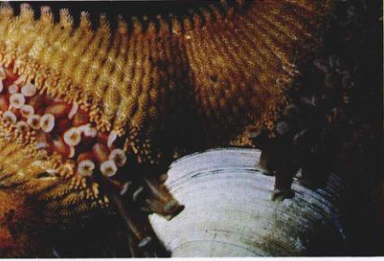
图 47.11 海星正在攻击击蛤 管足末端有杯状的吸盘，并列在每条腕腹面的沟两旁。
Page 9 / 原始页码 911
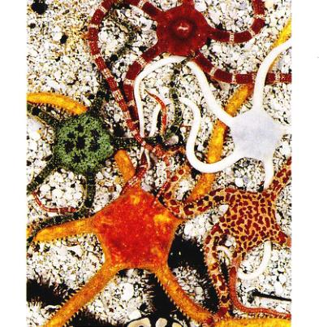
图 47.12 海蛇尾纲 海蛇尾快速地爬过海底附着物。
海星的身体是由一个逐渐与腕衔接起来的中央圆盘组成的。虽然大多数海星都有五条腕，符合这一门的五基本对称体制，但有些种类的数目却很多，通常是五的倍数。海星的身体较为平坦、柔软，体被有颜色的表皮。
1) 内骨骼
表皮下是由富含钙的小骨片组成的内骨骼，它们和结缔组织连在一起。这些小骨片突起形成了体表的棘刺 (spine)。在这些棘刺基部的周围有一些很小的、像钳子一样的棘钳 (pedicellariae)，它们具有很小的爪，可以通过肌肉控制。这些棘钳能够移除身体表面的残渣，也可辅助捕食。
2) 水管系统
海星口（底）面的每一条腕上有一道深沟从中央口伸达腕的尖端。这些沟的两边是管足，用以移行。每条腕的内部都有辐水管将管足和中央的环水管连接起来。这些管道系统是由海星控制的一个独特的水压系统。与管足连接的囊状壶收缩时，能够使水进入管足，使之伸长。相反，管足的肌肉收缩时，液体流回囊状壶。每个管足端部的肌肉可以使管足吸盘中央拱开，从而使足按在附着物上产生吸力。数百个管足协调运动，可沿着表面拉动海星的腕。
3) 摄食
海星的口位于口的中央。有一些海星以非凡的方式捕食双壳类软体动物。它们可以通过向贝壳施加拉力而把双壳类的贝壳打开一条缝（图 47.11）。这条非常窄的缝足以使海星把它从口中伸出来的胃插入贝的体内。在软体动物体内，海星分泌消化酶，消化猎物的软组织，消化完成之后，就又把它的胃收回来。
4) 繁殖
大多数海星都是雌雄异体的，每条腕的腹面都有一对性腺。卵和精子排进水中，所以是体外受精。在某些种类中，受精卵在特殊的孔腔或者直接在动物的身体下面孵化，发育成幼虫，幼虫凭借明显的纤毛带游动。
47.3.3 海蛇尾纲：海蛇尾
海蛇尾纲 (Ophiuroidea)（图 47.12）是棘皮动物门最大的一个纲，种类最丰富（大约有 2000 种）。常隐蔽避光生活，大多在夜晚活动。
海蛇尾有着细长、分叉的腕。它们是棘皮动物中移动性最强的动物，靠拉动自身来移动。通过成对或成组地移动腕，而使身体在基质上“划动”，从一侧移到另一侧。有一些海蛇尾用腕来游泳，这在棘皮动物中是非常罕见的习性。
海蛇尾在爬过海底的各种物体的时候，用管足捕食悬浮的浮游生物和有机碎屑。不仅如此，它们的管足也是重要的感觉器官，并在捕捉到食物后将其送进口中。正如它们的俗称“易碎星”，海蛇尾的腕非常容易脱落，这个特性使它们能够在捕食者面前保护自己。
像海星一样，海蛇尾有五条腕。与棘皮动物门的其纲相比，虽然海蛇尾与海星的关系更近，仔细看来看它们却非常不同。海蛇尾没有棘钳，而海星有，此外每条腕上的沟是封闭的，被小骨片覆盖。海蛇尾的管足没有囊状壶，没有吸盘，管足是用于摄食而不是运动。
海蛇尾通常是雌雄异体，大多数种类的雌雄配子释放入水，并在水中结合，在浮游阶段完成发育过程。幼虫用精巧的纤毛带游动和捕食。有些种类在特殊的孔腔中抚育幼体，直到发育完全，幼体才从孔腔中释放。
Page 10 / 原始页码 912
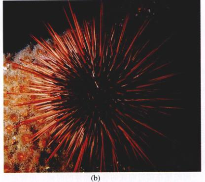
图 47.13 海胆纲 (a) 盾形网海胆 (Echinarachnius parma)，(b) 藩市球海胆 (Strongylocentrotus franciscanus)。
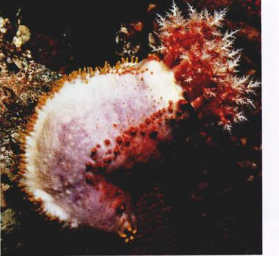
图 47.14 海参纲的代表种 ——海参。
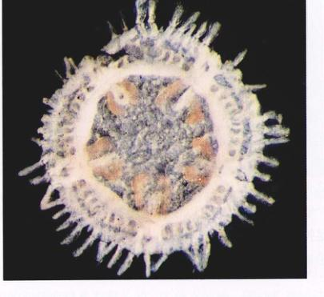
图 47.15 海菊花纲 (Concentricycloidea) 的代表种 ——海菊花。
47.3.4 海胆纲：海胆和沙币
海胆纲 (Echinoidea) 的海胆和沙币 (sand dollar) 没有独立的腕，但和其他的棘皮动物一样（图 47.13），也是五辐射对称的身体体制。五列管足从石灰质的骨骼中伸出来，同时也也有口和肛门的开口。这些开口可以在海胆球形的骨骼和沙币扁平的骨骼上看到。海胆纲大约有 950 个现存种。
海胆纲用它们的管足或者可移动的刺来行走，这些刺通过一个可以使它们自由旋转的关节连接在骨骼上。海胆和沙币沿海底移动，靠藻类和小的有机碎片为生。它们用口周围很大的三角形牙齿把这些东西从附着物上刮下来。海胆的性腺被世界上许多地方的人认为是佳肴。由于它们具有钙质骨骼，海胆和沙币常在化石中被完整保存，现已记录了 5000 多个化石种类。
像其他大多数棘皮动物一样，海胆和沙币也是雌雄异体。卵和精子被分别排入水中，并在水中受精。海胆纲有些种类会抚育幼体，还有一些种类有自由游动的幼虫，在幼虫细长、优美的腕上延伸着纤毛带。
Page 11 / 原始页码 913
47.3.5 海参纲和海菊花纲：海参和海菊花
1) 海参
海参，又叫海黄瓜，属海参纲 (Holothuroidea)，形状多多少少就像它的植物同名物一样。与前面介绍的那些纲不同，海参是柔软的、蠕虫状的动物，通常有着坚韧的、皮革状的外表皮（图 47.14）。本纲约有 1500 种，分布于世界各地。除了少数几种会游泳以外，海参侧卧在海底。它们的口位于身体的前端，周围有 8~30 个特化的管足，叫做触手，触手是分支的。围绕着口的触手会分泌黏液，用来捕捉海水中以食的小型浮游生物。每只触手都定期地在食管内擦拭，然后覆盖上新的黏液。
海参十分柔软，因为它们的钙质骨骼还原成了广泛分散的微小板块。这些动物有着庞大的内部分支系统，叫做呼吸树 (respiration tree)，由泄殖腔 (cloaca) 生成，或叫做肛腔。通过收缩泄殖腔，水被压入或排出呼吸树，气体交换就在这个过程中进行。大多数海参雌雄异体，但也有些是雌雄同体的。
大多数海参除了触手之外，身体上还有管足。这些管足，或者局限于五条辐射沟内或者分散在全身表面，能够使海参缓慢的移动。另一方面，无论是否有管足，海参都能蠕动向前。大多数的海参行动迟缓，但是有些种类，特别是深海种类，能够快速游动。但海参被激怒的时候，有时它们会通过激烈的肌肉收缩喷出一部分内脏碎片，这些碎片会从肛门喷出，有时甚至冲破体壁。
2) 海菊花
海菊花是一类发现较迟的棘皮动物（1986年发现），呈奇特的盘形，直径不到 1cm，发现于新西兰 1000 m 深海处（图 47.15）。迄今为止只发现了两种。它们呈五辐射对称，管足围绕圆盘的周边着生，而不是像其他的棘皮动物那样排列。其中一种海菊花具有很浅的、吸盘状的胃，但没有消化管和肛门；另一种根本就没消化管，仅在口的表面覆盖了一层直接吸收营养的膜。
(舒骁 武振龙 谢莉萍 译校)
Page 12 / 原始页码 914
小 结
47.1 后口动物的胚胎发育方式完全不同于原口动物
- 真体腔动物有两条重要的进化分支——原口动物和后口动物，二者都出现在已知最古老的多细胞动物化石记录中，可以上溯至 6.5 亿年前。
- 在原口动物中，口在胚孔附近发育，且胚胎的早期分裂是螺旋形的。在发育的早期，每个细胞的命运就已决定，它们不能单独地发育及完整的动物。
- 在后口动物中，肛门从胚孔或其附近发育而来，而口随后从原肠胚的另一端发育形成。胚的早期分裂是辐射式的。在发育的早期阶段，胚胎的每个细胞都能够分化形成完整的动物。
47.2 棘皮动物是具有内骨骼的后口动物
- 棘皮动物是独特的海洋后口动物，成体是辐射对称的。
- 棘皮动物的表皮覆盖着由分散或愈合的富含钙的板块构成的内骨骼。
- 棘皮动物运用独特的含有管足的水管系统来运动或猎食。
47.3 棘皮动物六个纲的成体都呈辐射对称
- 海百合一生中部分或所有时间是固着不动的，它们的口和肛门都位于身体的上表面。
- 海星是活跃的捕食者，用管足来移动。
- 海蛇尾用管足来猎食，移动同时动用两条腕。
- 海胆和沙币的内骨骼是由愈合在一起的碳酸钙骨骼组成的，这种内骨骼在化石中保存完好。
- 海参的内骨骼彻底退化且分散排列，这使它们身体柔软。
- 海菊花是最新发现的一纲棘皮动物，有着盘形的身体。
问 题
- 在原口真体腔动物的胚胎发育过程中，卵裂和胚孔发生的方式是什么样的？后口体腔动物又是怎样的？
- 在真体腔动物中原口动物主要包括哪些门？后口动物包括哪些主要的门？这两大类群生物早期发育的细胞命运有何不同？从中胚层组织发育形成体腔，二者之间有何不同？
- 成年棘皮动物的身体体制呈现什么样的对称？
- 棘皮动物骨骼是如何组成和排布的？
- 棘皮动物如何呼吸？它们的消化系统是怎样发育的？
- 棘皮动物门有哪些繁殖方式？它们有什么样的幼虫？
- 海参与其他的棘皮动物的最主要的区别是什么？有些管足是如何特化的？它们的骨骼化程度怎样？它们独特的呼吸树有什么样的功能？它们的繁殖方式与其他的棘皮动物有什么不同？